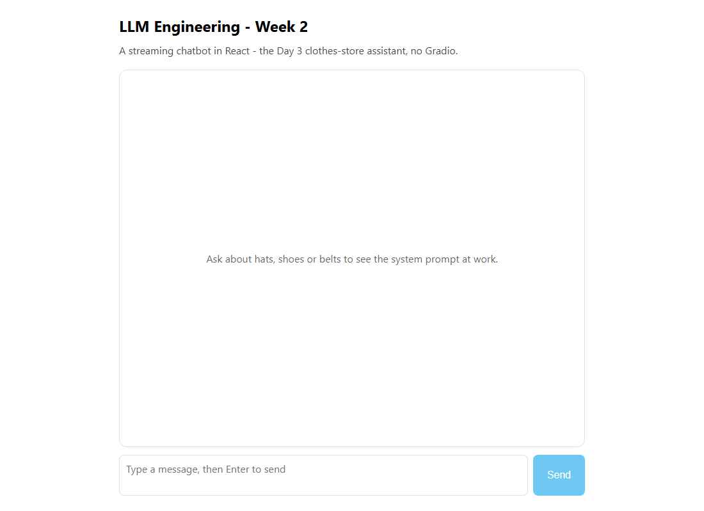

Week 2 · Day 2 — Put a UI on It: Gradio and React
Wrap your model in a web interface - Gradio for instant Python UIs, and a React app (Vite + a Hono API) for the TypeScript version.
Companion to Ed Donner's course · uv setup · Python + TypeScript/React · code verified against the repoSo far every lab has run inside a notebook: you type in a cell, press run, and read the answer in the output. That is perfect while you are experimenting, but it is not something you can hand to a colleague or a business sponsor. Today you put a real web user interface on your model so anyone can type a message in a browser and see the reply. In Python the course uses Gradio, which the instructor calls "outrageously simple": a handful of lines turns a plain function into a shareable web app. This guide also ships the TypeScript way of doing the same thing, a small React app, so you can see the two worlds side by side.
The instructor is upfront about why this matters. If you have ever tried to "stand up a React app", you know there is a lot of boilerplate before anything appears on screen. Gradio removes almost all of it for the common case of "I have a function, give it a UI". The trade-off is that Gradio is built for demos, prototypes and internal tools, while React is what you reach for when you want full control over a production front end. This page shows both and makes the parallel explicit: a Python function plus Gradio does the same job as a server route plus a React component.
Use the Code in: switch at the top of the page (or the Python | TypeScript tabs on the
code card) to pick a language. The Python side is the Gradio notebook as Ed records it, video by video. The
TypeScript side ports each video's model calls, and a separate section shows the React chat app this guide ships in
week2-ts/, which plays Gradio's part. Gradio and React are genuinely different tools, so this is not a
line-for-line translation, but they solve the same problem, so reading either one teaches you the idea.
The ideas behind today
There are four ideas to hold onto. First, Gradio inspects your function's inputs and
outputs and draws the matching controls for you (a textbox, a dropdown, a Markdown panel).
Second, launch() starts a tiny web server on your own machine, so the UI is a real web page,
not a notebook trick. Third, if your function is a Python generator (it uses yield),
Gradio automatically streams the answer in, which gives you the typewriter effect for free. Fourth, the
React version reaches the same goal with more moving parts: a component
draws the screen, and a small server answers its requests.
New to Gradio? What it is and why it matters
Gradio is a Python library, now part of Hugging Face,
for building a web UI around a function without writing any HTML, CSS or JavaScript. You import it as
import gradio as gr, write an ordinary function, then wrap it: gr.Interface(fn=your_function,
inputs="textbox", outputs="textbox").launch(). Gradio reads the inputs and
outputs you describe, builds a page with the right controls, and runs a local web server so you
can use it in the browser. It is designed for demos and internal tools, which is exactly what an LLM
engineer needs to show work to other people quickly. The allow_flagging="never" you will see in the
video just turns off a built-in "flag this result" button; current Gradio spells it flagging_mode="never".
New to React and components? What they are and why they matter
React is the most popular JavaScript library for building
user interfaces. You build a screen out of components: a
component is just a function that returns a description
of what should appear. That description is written in JSX, an
HTML-like syntax you put inside the code, so <button>Send</button> in a React file
is JSX that React turns into a real button on the page. When your data changes, React works out what on the
screen needs to change and updates just that part. The Day 2 React app in this guide is a single component
called App: a message list, a text box and a Send button.
New to Vite and dev servers? What they are and why they matter
Vite is the tool that runs a React project while you build
it and bundles it for release. During development npm run dev starts Vite's dev server,
which serves your app at an address such as http://localhost:5173 and reloads the page the
instant you save a file. For release, vite build turns your source into a small set of
optimised files a normal web host can serve. Where Gradio's launch() both builds and serves the
page for you, in the React world Vite handles the front end and a separate program handles the API.
New to "client vs server"? What the split means
A web app has two halves. The client is the code that runs in the visitor's browser: in our case the React component that draws the chat and reads what you type. The server is code that runs elsewhere (here, on your own machine during development) and does the work the browser is not allowed to do, such as talking to the model with your secret API key. The browser never sees the key; it only asks the server. With Gradio this split is hidden from you, because the function runs on the server and Gradio wires up the browser automatically. With React you build both halves yourself, which is why the TypeScript side has a React app and a small Hono server.
The parallel: two ways to put a UI on a model
Both approaches do the same three things: show controls, send what the user typed to the model, and
display the reply as it streams back. They just divide the work differently. In Python, Gradio is the UI
and the server, and your function is the only code you write. In TypeScript, React is the UI, a Hono
route is the server, and fetch carries the message between them.
Lesson by lesson
One section per video, in the order you watch them. Each code block is what is on screen in that
video (week2/day2.ipynb as Ed recorded it in 2024). Two things have changed since: the models
he uses were retired, and Gradio itself moved on (the current version is Gradio 6). So the Python blocks have two
versions, As in the video and Runs today (the same cells with current models and
Gradio arguments). The TypeScript tab ports each video's model calls; Gradio has no TypeScript twin, so the web page
half is the React app in the next section.
Video 5 · Building AI UIs with Gradio: why bother
Slides, no code. Why user interfaces matter to an LLM engineer: you can put a prototype in front
of colleagues and business sponsors quickly, without the boilerplate of a React app. Gradio (a startup now part of
Hugging Face) needs one import, import gradio as gr, and a function: give it inputs and outputs and it
builds the screen. Today's plan: a UI for GPT and Claude, then one for last week's company brochure, with streaming
and Markdown.
Video 6 · Gradio basics: from shout() to a GPT web UI
In week2/day2.ipynb Ed sets up the clients, wraps a GPT-4o-mini call in
message_gpt, then builds his first interfaces around a toy shout function: inline, in its
own browser tab, and on a public share=True link (the code still runs on his machine). Finally he swaps
shout for message_gpt and has a web UI on an LLM.
# imports
import os
import requests
from bs4 import BeautifulSoup
from typing import List
from dotenv import load_dotenv
from openai import OpenAI
import google.generativeai
import anthropic
import gradio as gr # oh yeah!
# Load environment variables in a file called .env
load_dotenv()
os.environ['OPENAI_API_KEY'] = os.getenv('OPENAI_API_KEY', 'your-key-if-not-using-env')
os.environ['ANTHROPIC_API_KEY'] = os.getenv('ANTHROPIC_API_KEY', 'your-key-if-not-using-env')
os.environ['GOOGLE_API_KEY'] = os.getenv('GOOGLE_API_KEY', 'your-key-if-not-using-env')
# Connect to OpenAI, Anthropic and Google
openai = OpenAI()
claude = anthropic.Anthropic()
google.generativeai.configure()
# A generic system message - no more snarky adversarial AIs!
system_message = "You are a helpful assistant"
# Let's wrap a call to GPT-4o-mini in a simple function
def message_gpt(prompt):
messages = [
{"role": "system", "content": system_message},
{"role": "user", "content": prompt}
]
completion = openai.chat.completions.create(
model='gpt-4o-mini',
messages=messages,
)
return completion.choices[0].message.content
message_gpt("What is today's date?")
# here's a simple function
def shout(text):
print(f"Shout has been called with input {text}")
return text.upper()
shout("hello")
gr.Interface(fn=shout, inputs="textbox", outputs="textbox").launch()
gr.Interface(fn=shout, inputs="textbox", outputs="textbox", allow_flagging="never").launch(share=True)
view = gr.Interface(
fn=shout,
inputs=[gr.Textbox(label="Your message:", lines=6)],
outputs=[gr.Textbox(label="Response:", lines=8)],
allow_flagging="never"
)
view.launch()
view = gr.Interface(
fn=message_gpt,
inputs=[gr.Textbox(label="Your message:", lines=6)],
outputs=[gr.Textbox(label="Response:", lines=8)],
allow_flagging="never"
)
view.launch()# imports
import os
import requests
from bs4 import BeautifulSoup
from typing import List
from dotenv import load_dotenv
from openai import OpenAI
import anthropic
# (import google.generativeai from the video is gone: that library is retired, and Day 2 never calls Gemini)
import gradio as gr # oh yeah!
# (Gradio 6 is current. allow_flagging from the video was renamed flagging_mode in Gradio 5 and removed in 6.)
# Load environment variables in a file called .env
load_dotenv()
os.environ['OPENAI_API_KEY'] = os.getenv('OPENAI_API_KEY', 'your-key-if-not-using-env')
os.environ['ANTHROPIC_API_KEY'] = os.getenv('ANTHROPIC_API_KEY', 'your-key-if-not-using-env')
os.environ['GOOGLE_API_KEY'] = os.getenv('GOOGLE_API_KEY', 'your-key-if-not-using-env')
# Connect to OpenAI and Anthropic
openai = OpenAI()
claude = anthropic.Anthropic()
# A generic system message - no more snarky adversarial AIs!
system_message = "You are a helpful assistant"
# Let's wrap a call to a small GPT in a simple function (gpt-4o-mini in the video)
def message_gpt(prompt):
messages = [
{"role": "system", "content": system_message},
{"role": "user", "content": prompt}
]
completion = openai.chat.completions.create(
model='gpt-6-luna',
reasoning_effort='none',
messages=messages,
)
return completion.choices[0].message.content
message_gpt("What is today's date?")
# here's a simple function
def shout(text):
print(f"Shout has been called with input {text}")
return text.upper()
shout("hello")
gr.Interface(fn=shout, inputs="textbox", outputs="textbox").launch()
gr.Interface(fn=shout, inputs="textbox", outputs="textbox", flagging_mode="never").launch(share=True)
view = gr.Interface(
fn=shout,
inputs=[gr.Textbox(label="Your message:", lines=6)],
outputs=[gr.Textbox(label="Response:", lines=8)],
flagging_mode="never"
)
view.launch()
view = gr.Interface(
fn=message_gpt,
inputs=[gr.Textbox(label="Your message:", lines=6)],
outputs=[gr.Textbox(label="Response:", lines=8)],
flagging_mode="never"
)
view.launch()// Video 6 in TypeScript: the two functions Ed puts a UI on (run: npx tsx day2_functions.ts)
// Gradio has no TypeScript twin: the React app further down this page is the UI half.
import "dotenv/config";
import OpenAI from "openai";
const openai = new OpenAI(); // reads OPENAI_API_KEY
// A generic system message - no more snarky adversarial AIs!
const systemMessage = "You are a helpful assistant";
// Wrap a call to a small GPT in a simple function
async function messageGpt(prompt: string): Promise<string> {
const completion = await openai.chat.completions.create({
model: "gpt-6-luna",
reasoning_effort: "none",
messages: [
{ role: "system", content: systemMessage },
{ role: "user", content: prompt },
],
});
return completion.choices[0].message.content ?? "";
}
// here's a simple function
function shout(text: string): string {
console.log(`Shout has been called with input ${text}`);
return text.toUpperCase();
}
console.log(shout("hello"));
console.log(await messageGpt("What is today's date?"));Line by line
Line numbers follow the As in the video block.
| Line(s) | Code | What it does & why |
|---|---|---|
| 3-10 | import os … import anthropic | The imports for the whole notebook: os for environment variables, requests and BeautifulSoup for the brochure at the end (Video 8), load_dotenv, and one client library per provider. google.generativeai is Google's library of the time; it is imported and configured but Day 2 never calls Gemini. |
| 12 | import gradio as gr # oh yeah! | The "magical line". Gradio is imported under the short name gr, as everyone does. |
| 16-19 | load_dotenv() / os.environ[...] = os.getenv(..., 'your-key-if-not-using-env') ×3 | Reads your .env file and copies each key into the environment (with a placeholder fallback), exactly as on Day 1. |
| 23-27 | openai = OpenAI() / claude = anthropic.Anthropic() / google.generativeai.configure() | The "three somewhat analogous commands" that get the APIs ready. Each finds its key in the environment. |
| 31 | system_message = "You are a helpful assistant" | A generic system prompt, the usual starting point. It is a global variable, which matters in Video 7. |
| 35-44 | def message_gpt(prompt): ... | Wraps one GPT-4o-mini call in a function: build the two-message list, call chat.completions.create, return the text. A function that takes a string and returns a string is exactly what Gradio wants. |
| 46 | message_gpt("What is today's date?") | A quick test. GPT answers "October 3, 2023": it has no idea of today's date, and the answer hints at where its training data ends. |
| 50-52 | def shout(text): ... / return text.upper() | A deliberately trivial function that upper-cases its input, to show Gradio works on any function. Ed adds the print partway through the video to prove where the function runs. |
| 54 | shout("hello") | Called directly, it returns 'HELLO'. |
| 56 | gr.Interface(fn=shout, inputs="textbox", outputs="textbox").launch() | The key line. gr.Interface builds a page around fn; inputs/outputs name the kind of control (one textbox each). .launch() starts a small web server on your machine (port 7860 or the next free one) and shows the page under the cell. Ed first writes it as view = gr.Interface(...) plus view.launch(), then folds it into one line. |
| 58 | ..., allow_flagging="never").launch(share=True) | Two additions. allow_flagging="never" removes the "Flag" button (and the flagged folder it creates). share=True also serves the page on a public gradio.live link you can send to a colleague, while the function itself still runs on your machine: the print appears in your notebook when they press Submit. |
| 60-66 | view = gr.Interface(fn=shout, inputs=[gr.Textbox(label=..., lines=6)], outputs=[gr.Textbox(..., lines=8)], ...) | Instead of the bare string "textbox", real gr.Textbox objects with a label and a height, passed in lists (a list can hold several inputs or outputs). |
| 68-74 | view = gr.Interface(fn=message_gpt, ...) | The reveal. The same code with fn=message_gpt instead of shout: a web UI in front of an LLM. Ed asks it for a joke ("outstanding in his field"). |
Line by line (TypeScript)
| Line(s) | Code | What it does & why |
|---|---|---|
| 3-4 | import "dotenv/config" / import OpenAI from "openai" | Loads .env and the OpenAI SDK. |
| 6 | const openai = new OpenAI() | The client; it reads OPENAI_API_KEY itself. |
| 12-21 | async function messageGpt(prompt: string): Promise<string> | The same wrapper. It is async because the network call is awaited; ?? "" turns a missing reply into an empty string. |
| 25-27 | function shout(text: string): string | The toy function, with the same log line. |
| 30-31 | console.log(shout("hello")) / await messageGpt(...) | Calls both directly. To put them behind a web page you need a UI and a server, which is what the React app below provides. |
Video 7 · Streaming GPT and Claude replies into Gradio
Same notebook. Ed asks for Markdown and swaps the output box for gr.Markdown, then turns
the wrapper into a generator so Gradio streams the answer in, first for GPT-4o-mini and then for
Claude 3 Haiku through Anthropic's own library.
system_message = "You are a helpful assistant that responds in markdown"
view = gr.Interface(
fn=message_gpt,
inputs=[gr.Textbox(label="Your message:")],
outputs=[gr.Markdown(label="Response:")],
allow_flagging="never"
)
view.launch()
# Let's create a call that streams back results
def stream_gpt(prompt):
messages = [
{"role": "system", "content": system_message},
{"role": "user", "content": prompt}
]
stream = openai.chat.completions.create(
model='gpt-4o-mini',
messages=messages,
stream=True
)
result = ""
for chunk in stream:
result += chunk.choices[0].delta.content or ""
yield result
view = gr.Interface(
fn=stream_gpt,
inputs=[gr.Textbox(label="Your message:")],
outputs=[gr.Markdown(label="Response:")],
allow_flagging="never"
)
view.launch()
def stream_claude(prompt):
result = claude.messages.stream(
model="claude-3-haiku-20240307",
max_tokens=1000,
temperature=0.7,
system=system_message,
messages=[
{"role": "user", "content": prompt},
],
)
response = ""
with result as stream:
for text in stream.text_stream:
response += text or ""
yield response
view = gr.Interface(
fn=stream_claude,
inputs=[gr.Textbox(label="Your message:")],
outputs=[gr.Markdown(label="Response:")],
allow_flagging="never"
)
view.launch()system_message = "You are a helpful assistant that responds in markdown"
# (Gradio 6 is current. allow_flagging from the video was renamed flagging_mode in Gradio 5 and removed in 6.)
view = gr.Interface(
fn=message_gpt,
inputs=[gr.Textbox(label="Your message:")],
outputs=[gr.Markdown(label="Response:")],
flagging_mode="never"
)
view.launch()
# Let's create a call that streams back results
def stream_gpt(prompt):
messages = [
{"role": "system", "content": system_message},
{"role": "user", "content": prompt}
]
stream = openai.chat.completions.create(
model='gpt-6-luna', # gpt-4o-mini in the video
reasoning_effort='none',
messages=messages,
stream=True
)
result = ""
for chunk in stream:
result += chunk.choices[0].delta.content or ""
yield result
view = gr.Interface(
fn=stream_gpt,
inputs=[gr.Textbox(label="Your message:")],
outputs=[gr.Markdown(label="Response:")],
flagging_mode="never"
)
view.launch()
def stream_claude(prompt):
result = claude.messages.stream(
model="claude-haiku-4-5", # claude-3-haiku-20240307 in the video
max_tokens=1000,
# (temperature=0.7 from the video is gone: Anthropic's current SDK no longer accepts it)
system=system_message,
messages=[
{"role": "user", "content": prompt},
],
)
response = ""
with result as stream:
for text in stream.text_stream:
response += text or ""
yield response
view = gr.Interface(
fn=stream_claude,
inputs=[gr.Textbox(label="Your message:")],
outputs=[gr.Markdown(label="Response:")],
flagging_mode="never"
)
view.launch()// Video 7 in TypeScript: streaming generators for GPT and Claude (run: npx tsx day2_streaming.ts)
import "dotenv/config";
import OpenAI from "openai";
import Anthropic from "@anthropic-ai/sdk";
const openai = new OpenAI(); // reads OPENAI_API_KEY
const claude = new Anthropic(); // reads ANTHROPIC_API_KEY
const systemMessage = "You are a helpful assistant that responds in markdown";
// Each generator yields the WHOLE reply so far, like the Python ones Gradio animates
async function* streamGpt(prompt: string, system = systemMessage): AsyncGenerator<string> {
const stream = await openai.chat.completions.create({
model: "gpt-6-luna",
reasoning_effort: "none",
messages: [
{ role: "system", content: system },
{ role: "user", content: prompt },
],
stream: true,
});
let result = "";
for await (const chunk of stream) {
result += chunk.choices[0]?.delta?.content ?? "";
yield result;
}
}
async function* streamClaude(prompt: string, system = systemMessage): AsyncGenerator<string> {
const stream = claude.messages.stream({
model: "claude-haiku-4-5",
max_tokens: 1000, // no temperature: the current SDK no longer takes it
system,
messages: [{ role: "user", content: prompt }],
});
let response = "";
for await (const event of stream) {
if (event.type === "content_block_delta" && event.delta.type === "text_delta") {
response += event.delta.text;
yield response;
}
}
}
// A UI would redraw on every yield; here we keep only the final, complete text
let last = "";
for await (const soFar of streamGpt("How do I get from Times Square to Grand Central?")) last = soFar;
console.log(last);
for await (const soFar of streamClaude("How do I get from Times Square to Grand Central?")) last = soFar;
console.log(last);Line by line
| Line(s) | Code | What it does & why |
|---|---|---|
| 1 | system_message = "You are a helpful assistant that responds in markdown" | Changes the global system prompt. message_gpt reads that global, so every later reply comes back in Markdown without touching the function. |
| 3-9 | outputs=[gr.Markdown(label="Response:")] | The same interface with the output control swapped from a textbox to gr.Markdown, so headings and lists render. Ed asks how to get from Times Square to Grand Central. |
| 13-21 | def stream_gpt(prompt): ... / stream=True | A streaming version of the wrapper: the same call plus stream=True, as on Day 1. |
| 23-26 | result = "" / for chunk in stream: result += ... / yield result | The Gradio subtlety. Because of yield this is a generator, and Gradio notices that and redraws the output on every yield. You must yield the whole text so far, not each new chunk; Ed suggests trying yield chunk... to see the pieces flash and vanish. |
| 28-34 | view = gr.Interface(fn=stream_gpt, ...) | Only the function name changes. No "streaming" option exists or is needed: Gradio sees a generator and animates the answer. |
| 36-50 | def stream_claude(prompt): result = claude.messages.stream(...) … yield response | The Claude twin, using Anthropic's own library as on Day 1: .stream(...) instead of a stream=True argument, max_tokens required, the system prompt passed separately, and a with block reading text_stream. It too yields the growing response. |
| 52-58 | view = gr.Interface(fn=stream_claude, ...) | Same UI, now talking to Claude 3 Haiku (a shorter answer with two options). |
Line by line (TypeScript)
| Line(s) | Code | What it does & why |
|---|---|---|
| 6-7 | new OpenAI() / new Anthropic() | One client per provider, each reading its key from the environment. |
| 12-25 | async function* streamGpt(prompt, system = systemMessage) | function* makes a generator, the twin of Python's yield. It accumulates each delta.content into result and yields the whole text so far, just like the Python version. system defaults to the global prompt. |
| 29-40 | async function* streamClaude(...) / for await (const event of stream) | Claude's stream is a series of events; the text arrives in content_block_delta events whose delta is text_delta. Each piece is added to response, which is yielded. |
| 46-48 | for await (const soFar of streamGpt(...)) last = soFar; | Consumes the generator. A React UI would redraw on every value; this script just keeps the last (complete) one and prints it. |
Video 8 · A multi-model UI and the brochure generator
Same notebook, last part. A stream_model generator plus a dropdown lets you flip between
GPT and Claude on the same question. Then the Week 1 company brochure gets a UI: company name, landing page URL and
model in, a streamed Markdown brochure out. Ed's exercises: add Gemini, and add a dropdown for the brochure's tone.
def stream_model(prompt, model):
if model=="GPT":
result = stream_gpt(prompt)
elif model=="Claude":
result = stream_claude(prompt)
else:
raise ValueError("Unknown model")
for chunk in result:
yield chunk
view = gr.Interface(
fn=stream_model,
inputs=[gr.Textbox(label="Your message:"), gr.Dropdown(["GPT", "Claude"], label="Select model")],
outputs=[gr.Markdown(label="Response:")],
allow_flagging="never"
)
view.launch()
# A class to represent a Webpage
class Website:
url: str
title: str
text: str
def __init__(self, url):
self.url = url
response = requests.get(url)
self.body = response.content
soup = BeautifulSoup(self.body, 'html.parser')
self.title = soup.title.string if soup.title else "No title found"
for irrelevant in soup.body(["script", "style", "img", "input"]):
irrelevant.decompose()
self.text = soup.body.get_text(separator="\n", strip=True)
def get_contents(self):
return f"Webpage Title:\n{self.title}\nWebpage Contents:\n{self.text}\n\n"
system_prompt = "You are an assistant that analyzes the contents of a company website landing page \
and creates a short brochure about the company for prospective customers, investors and recruits. Respond in markdown."
def stream_brochure(company_name, url, model):
prompt = f"Please generate a company brochure for {company_name}. Here is their landing page:\n"
prompt += Website(url).get_contents()
if model=="GPT":
result = stream_gpt(prompt)
elif model=="Claude":
result = stream_claude(prompt)
else:
raise ValueError("Unknown model")
for chunk in result:
yield chunk
view = gr.Interface(
fn=stream_brochure,
inputs=[
gr.Textbox(label="Company name:"),
gr.Textbox(label="Landing page URL:"),
gr.Dropdown(["GPT", "Claude"], label="Select model")],
outputs=[gr.Markdown(label="Brochure:")],
allow_flagging="never"
)
view.launch()# (Gradio 6 is current. allow_flagging from the video was renamed flagging_mode in Gradio 5 and removed in 6.)
def stream_model(prompt, model):
if model=="GPT":
result = stream_gpt(prompt)
elif model=="Claude":
result = stream_claude(prompt)
else:
raise ValueError("Unknown model")
for chunk in result:
yield chunk
view = gr.Interface(
fn=stream_model,
inputs=[gr.Textbox(label="Your message:"), gr.Dropdown(["GPT", "Claude"], label="Select model")],
outputs=[gr.Markdown(label="Response:")],
flagging_mode="never"
)
view.launch()
# A class to represent a Webpage
class Website:
url: str
title: str
text: str
def __init__(self, url):
self.url = url
response = requests.get(url)
self.body = response.content
soup = BeautifulSoup(self.body, 'html.parser')
# (two guards added, as in today's repo: a page may have an empty <title> or no <body>)
self.title = soup.title.string if soup.title and soup.title.string else "No title found"
if soup.body:
for irrelevant in soup.body(["script", "style", "img", "input"]):
irrelevant.decompose()
self.text = soup.body.get_text(separator="\n", strip=True)
else:
self.text = ""
def get_contents(self):
return f"Webpage Title:\n{self.title}\nWebpage Contents:\n{self.text}\n\n"
system_prompt = "You are an assistant that analyzes the contents of a company website landing page \
and creates a short brochure about the company for prospective customers, investors and recruits. Respond in markdown."
def stream_brochure(company_name, url, model):
prompt = f"Please generate a company brochure for {company_name}. Here is their landing page:\n"
prompt += Website(url).get_contents()
if model=="GPT":
result = stream_gpt(prompt)
elif model=="Claude":
result = stream_claude(prompt)
else:
raise ValueError("Unknown model")
for chunk in result:
yield chunk
view = gr.Interface(
fn=stream_brochure,
inputs=[
gr.Textbox(label="Company name:"),
gr.Textbox(label="Landing page URL:"),
gr.Dropdown(["GPT", "Claude"], label="Select model")],
outputs=[gr.Markdown(label="Brochure:")],
flagging_mode="never"
)
view.launch()// Video 8 in TypeScript: pick a model, then the brochure generator (run: npx tsx day2_brochure.ts)
import "dotenv/config";
import OpenAI from "openai";
import Anthropic from "@anthropic-ai/sdk";
import { parse } from "node-html-parser";
const openai = new OpenAI();
const claude = new Anthropic();
const systemMessage = "You are a helpful assistant that responds in markdown";
// Each generator yields the WHOLE reply so far, like the Python ones Gradio animates
async function* streamGpt(prompt: string, system = systemMessage): AsyncGenerator<string> {
const stream = await openai.chat.completions.create({
model: "gpt-6-luna",
reasoning_effort: "none",
messages: [
{ role: "system", content: system },
{ role: "user", content: prompt },
],
stream: true,
});
let result = "";
for await (const chunk of stream) {
result += chunk.choices[0]?.delta?.content ?? "";
yield result;
}
}
async function* streamClaude(prompt: string, system = systemMessage): AsyncGenerator<string> {
const stream = claude.messages.stream({
model: "claude-haiku-4-5",
max_tokens: 1000, // no temperature: the current SDK no longer takes it
system,
messages: [{ role: "user", content: prompt }],
});
let response = "";
for await (const event of stream) {
if (event.type === "content_block_delta" && event.delta.type === "text_delta") {
response += event.delta.text;
yield response;
}
}
}
// One generator, two models: pass every growing reply straight through
async function* streamModel(prompt: string, model: string, system = systemMessage): AsyncGenerator<string> {
let result: AsyncGenerator<string>;
if (model === "GPT") result = streamGpt(prompt, system);
else if (model === "Claude") result = streamClaude(prompt, system);
else throw new Error("Unknown model");
yield* result;
}
// A class to represent a Webpage (node-html-parser plays BeautifulSoup's part)
class Website {
url: string;
title = "No title found";
text = "";
constructor(url: string) {
this.url = url;
}
async load(): Promise<Website> {
const response = await fetch(this.url);
const root = parse(await response.text());
this.title = root.querySelector("title")?.text.trim() || "No title found";
const body = root.querySelector("body");
if (body) {
for (const tag of ["script", "style", "img", "input"]) {
for (const el of body.querySelectorAll(tag)) el.remove();
}
this.text = body.structuredText.trim();
}
return this;
}
getContents(): string {
return `Webpage Title:\n${this.title}\nWebpage Contents:\n${this.text}\n\n`;
}
}
const systemPrompt = "You are an assistant that analyzes the contents of a company website landing page " +
"and creates a short brochure about the company for prospective customers, investors and recruits. Respond in markdown.";
async function* streamBrochure(companyName: string, url: string, model: string): AsyncGenerator<string> {
let prompt = `Please generate a company brochure for ${companyName}. Here is their landing page:\n`;
prompt += (await new Website(url).load()).getContents();
yield* streamModel(prompt, model, systemPrompt); // the Python passes no system prompt here (see the table)
}
let brochure = "";
for await (const soFar of streamBrochure("Hugging Face", "https://huggingface.co", "GPT")) brochure = soFar;
console.log(brochure);Line by line
| Line(s) | Code | What it does & why |
|---|---|---|
| 1-9 | def stream_model(prompt, model): ... | A composite generator: depending on model it starts stream_gpt or stream_claude and passes each value on. (Ed notes "chunk" is a misleading name, since each value is the full text so far.) To Gradio it is just a function with two arguments. |
| 11-17 | inputs=[gr.Textbox(...), gr.Dropdown(["GPT", "Claude"], label="Select model")] | Two input controls now, matched to the function's two arguments in order: the message and a dropdown. Ed flips between GPT and Claude on the same question, and suggests adding Gemini as an exercise. |
| 21-24 | class Website: / url: str … | The simple landing-page-only version of the Week 1 scraper: no link collection, just URL, title and text. |
| 26-34 | def __init__(self, url): ... | Fetches the page with requests, parses it with BeautifulSoup, keeps the title, removes scripts, styles, images and inputs, and keeps the visible text one line per block. |
| 36-37 | def get_contents(self): return f"Webpage Title:..." | Packs title and text into one string for the prompt. |
| 39-40 | system_prompt = "You are an assistant that analyzes ..." | The brochure instructions. Look closely: stream_gpt and stream_claude read system_message, not system_prompt, so this text is never actually sent; the models still write a brochure because the user prompt asks for one. (Today's repository fixes this by reassigning system_message.) |
| 42-52 | def stream_brochure(company_name, url, model): ... | Builds the user prompt from the company name and the scraped page, then streams from the chosen model, the same way as stream_model. |
| 54-63 | view = gr.Interface(fn=stream_brochure, inputs=[3 controls], outputs=[gr.Markdown(label="Brochure:")]) | Three inputs (company name, URL, model) for three arguments. Ed generates a Hugging Face brochure with GPT, then with Claude Haiku. |
Line by line (TypeScript)
| Line(s) | Code | What it does & why |
|---|---|---|
| 5 | import { parse } from "node-html-parser" | The HTML parser this guide uses in place of BeautifulSoup (node-html-parser; npm install node-html-parser). |
| 47-52 | async function* streamModel(prompt, model, system) / yield* result | Picks a generator and re-yields everything it produces: yield* is the one-word version of the Python for chunk in result: yield chunk. |
| 56-79 | class Website { ... async load() ... } | The scraper. A constructor cannot await, so fetching moves into an async load() method that fills title and text and returns the object. structuredText keeps one line per block, like get_text(separator="\n"). |
| 84-85 | const systemPrompt = "You are an assistant that analyzes ..." | The brochure instructions, which the port really sends (it passes them as system). |
| 87-90 | async function* streamBrochure(companyName, url, model) | Builds the prompt from the scraped page and streams the brochure from the chosen model. |
| 93-95 | for await (const soFar of streamBrochure(...)) brochure = soFar; | Runs it once for Hugging Face with GPT and prints the finished Markdown. |
stream_model: a message box, a model
dropdown and a Submit button. Each input control is one function argument, in order.Video 9 · Wrap-up: UIs for your models
A short recap with no code: you can call three providers' APIs and put a UI in front of them, including model choice, streaming and Markdown. Tomorrow: chat UIs in Gradio, more context in prompts (including multi-shot prompting), and a first customer support assistant.
The TypeScript UI: a React app instead of Gradio
Gradio builds the web page and runs the server for you. In TypeScript you build both halves: a
React component draws the chat in the browser, and a small
Hono route on the server calls the model with your key. This guide ships
that app in week2-ts/; it is the UI the Week 2 TypeScript ports plug into, and it reappears on the chatbot
day.
Switch the page to TypeScript (top of the page) to see the React component and its line-by-line table.
// Week 2 chat app: the React replacement for Gradio's ChatInterface (Day 3).
// A message list, an input box and a send button; the assistant reply streams in
// from the Hono /api/chat endpoint and renders as markdown.
import { useRef, useState, useEffect } from "react";
import { marked } from "marked";
type Message = { role: "user" | "assistant"; content: string };
export function App() {
const [messages, setMessages] = useState<Message[]>([]);
const [input, setInput] = useState("");
const [busy, setBusy] = useState(false);
const [error, setError] = useState("");
const listRef = useRef<HTMLDivElement>(null);
// Keep the newest message in view as the reply streams in.
useEffect(() => {
listRef.current?.scrollTo({ top: listRef.current.scrollHeight });
}, [messages]);
async function send() {
const message = input.trim();
if (!message || busy) return;
setBusy(true);
setError("");
setInput("");
const history = messages;
// Show the user turn immediately, plus an empty assistant turn we stream into.
setMessages([...history, { role: "user", content: message }, { role: "assistant", content: "" }]);
try {
const res = await fetch("/api/chat", {
method: "POST",
headers: { "Content-Type": "application/json" },
body: JSON.stringify({ message, history }),
});
if (!res.ok) {
const data = await res.json().catch(() => ({}));
setError(data.error ?? "Request failed");
// Drop the placeholder assistant turn on failure.
setMessages([...history, { role: "user", content: message }]);
return;
}
const reader = res.body?.getReader();
const decoder = new TextDecoder();
let text = "";
while (reader) {
const { value, done } = await reader.read();
if (done) break;
text += decoder.decode(value, { stream: true });
setMessages([
...history,
{ role: "user", content: message },
{ role: "assistant", content: text },
]);
}
} catch (e) {
setError(String(e));
} finally {
setBusy(false);
}
}
function onKeyDown(e: React.KeyboardEvent<HTMLTextAreaElement>) {
if (e.key === "Enter" && !e.shiftKey) {
e.preventDefault();
void send();
}
}
return (
<main className="wrap">
<h1>LLM Engineering - Week 2</h1>
<p className="sub">A streaming chatbot in React - the Day 3 clothes-store assistant, no Gradio.</p>
<div className="chat" ref={listRef}>
{messages.length === 0 && (
<div className="muted empty">Ask about hats, shoes or belts to see the system prompt at work.</div>
)}
{messages.map((m, i) => (
<div key={i} className={`msg ${m.role}`}>
<div className="who">{m.role === "user" ? "You" : "Assistant"}</div>
{m.role === "assistant" ? (
<div
className="bubble"
dangerouslySetInnerHTML={{ __html: marked.parse(m.content || "...") as string }}
/>
) : (
<div className="bubble">{m.content}</div>
)}
</div>
))}
</div>
{error && <div className="error">{error}</div>}
<div className="composer">
<textarea
value={input}
onChange={(e) => setInput(e.target.value)}
onKeyDown={onKeyDown}
placeholder="Type a message, then Enter to send"
rows={2}
/>
<button onClick={send} disabled={busy || !input.trim()}>
{busy ? "..." : "Send"}
</button>
</div>
</main>
);
}
Line by line: the React app
The React app (web/src/App.tsx) is a single component. Where Gradio built the controls from
your function, here you write the screen yourself in JSX and
manage its data with React state. The reply streams in from a Hono API route the browser calls with
fetch.
| Line(s) | Code | What it does & why |
|---|---|---|
| 1-3 | // Week 2 chat app ... | Comments describing the file. This is the Week 2 chat UI; it plays the role of Gradio's chat interface across the Week 2 UI days. |
| 4 | import { useRef, useState, useEffect } from "react"; | React's three core hooks. useState stores data that, when changed, redraws the screen; useEffect runs code after a render; useRef keeps a handle to a DOM element. |
| 5 | import { marked } from "marked"; | marked turns Markdown text into HTML, so the assistant's Markdown reply renders with headings and lists, the way Gradio's gr.Markdown did. |
| 7 | type Message = { role: "user" | "assistant"; content: string }; | A TypeScript type describing one chat turn: who said it and what they said. Naming the shape lets the compiler catch mistakes. |
| 9 | export function App() { | The single React component. A component is a function that returns JSX; export makes it available to the rest of the app. |
State: the data the screen is built from.
| Line(s) | Code | What it does & why |
|---|---|---|
| 10 | const [messages, setMessages] = useState<Message[]>([]); | The conversation so far, starting empty. messages is the current value; setMessages replaces it and triggers a redraw. This list is the chat on screen. |
| 11 | const [input, setInput] = useState(""); | Whatever is currently typed in the text box. Keeping it in state is what makes the box "controlled" by React. |
| 12-13 | const [busy, setBusy] = useState(false); / const [error, setError] = useState(""); | busy is true while a reply is in flight (used to disable the button); error holds any message to show the user. |
| 14 | const listRef = useRef<HTMLDivElement>(null); | A reference to the scrolling chat container, so code can scroll it to the bottom. |
| 17-19 | useEffect(() => { listRef.current?.scrollTo({ top: ... }); }, [messages]); | After every change to messages, scroll the newest line into view. The [messages] at the end tells React to run this only when the message list changes. |
Sending a message and streaming the reply.
| Line(s) | Code | What it does & why |
|---|---|---|
| 21-26 | async function send() { / if (!message || busy) return; / setBusy(true); setInput(""); | Runs when you click Send. It ignores empty messages or a send while one is already running, marks the app busy, and clears the input box. |
| 28-30 | const history = messages; / setMessages([...history, { role: "user", content: message }, { role: "assistant", content: "" }]); | Shows your message immediately and adds an empty assistant turn to stream text into. Updating state redraws the chat at once, so the UI feels instant. |
| 33-37 | const res = await fetch("/api/chat", { method: "POST", ..., body: JSON.stringify({ message, history }) }); | The client/server call. The browser sends the message and history to the Hono route /api/chat. The server holds the API key and calls the model; the browser never sees the key. This is the line Gradio writes for you behind the scenes. |
| 38-44 | if (!res.ok) { ... setError(...); setMessages([...history, { role: "user", content: message }]); return; } | If the server returns an error, show it and drop the empty assistant placeholder so the UI does not look stuck. |
| 45-47 | const reader = res.body?.getReader(); / const decoder = new TextDecoder(); / let text = ""; | Prepares to read the streamed response. getReader() reads the body in pieces as they arrive; TextDecoder turns the raw bytes into text; text is the running answer. |
| 48-57 | while (reader) { const { value, done } = await reader.read(); if (done) break; text += decoder.decode(value, { stream: true }); setMessages([...history, { role: "user", content: message }, { role: "assistant", content: text }]); } | The streaming loop. Each time a chunk arrives, add it to text and rewrite the assistant turn with the whole string so far. This is the React twin of Gradio yielding the cumulative result: the message list redraws on every chunk, producing the typewriter effect. |
| 58-62 | catch (e) { setError(String(e)); } finally { setBusy(false); } | Reports any network failure, and always clears busy at the end so the Send button works again. |
| 65-70 | function onKeyDown(e) { if (e.key === "Enter" && !e.shiftKey) { e.preventDefault(); void send(); } } | Lets Enter send the message while Shift+Enter still makes a new line, the usual chat behaviour. |
Rendering: the JSX that draws the screen.
| Line(s) | Code | What it does & why |
|---|---|---|
| 72-75 | return ( <main className="wrap"> <h1>...</h1> ... ) | The component returns JSX. className is JSX's word for the HTML class attribute. Everything from here down is the page's structure. |
| 77-80 | <div className="chat" ref={listRef}> / {messages.length === 0 && (...)} | The scrolling chat area, attached to listRef. When there are no messages, it shows a hint instead, a common "empty state". |
| 81-93 | {messages.map((m, i) => ( <div key={i} className={`msg ${m.role}`}> ... ))} | Drawing the list. map turns each message object into a bubble. The assistant's bubble uses marked.parse(...) to render Markdown; your messages show as plain text. The key helps React update the list efficiently. |
| 96 | {error && <div className="error">{error}</div>} | Shows the error line only when there is an error. This condition && element pattern is how JSX does "show this only if". |
| 98-108 | <textarea value={input} onChange={(e) => setInput(e.target.value)} onKeyDown={onKeyDown} ... /> / <button onClick={send} disabled={busy || !input.trim()}>{busy ? "..." : "Send"}</button> | The composer. The textarea's value is tied to state and updates it on every keystroke; the button calls send and is disabled while busy or empty. This is the hand-built equivalent of the controls Gradio drew from your function. |
yield and React's growing
text are two names for the same loop.In Python, running a gr.Interface(...).launch() cell prints a local URL like
http://127.0.0.1:7860 and shows the UI right under the cell. Type a message, press Submit, and
the reply appears; with a streaming function it types itself out word by word. The multi-model version adds a
dropdown so you can ask the same question of GPT and Claude. In TypeScript, after npm run dev
(front end) and the API server, the page from the screenshot loads; typing and pressing Enter streams the
assistant's reply into the chat.
- Gradio not installed.
import gradio as grfailing withModuleNotFoundError: No module named 'gradio'means the package is missing from your environment. With this course's setup, add it withuv add gradioand run the notebook through the project's.venv; do notpip installinto some other Python. - Yielding the wrong thing (streaming). In Gradio you must
yieldthe whole cumulative string so far, not each new chunk. Yielding onlydelta.contentmakes each piece flash and disappear instead of building up. - CORS / wrong port (React + Hono). The React dev server (Vite, often port 5173) and the
Hono API run separately. If the browser blocks the call with a CORS error, or
/api/chatreturns 404, the usual fix is to proxy/apito the API port invite.config.ts(so the browser only ever talks to one origin), or to enable CORS on the Hono side. Theweek2-ts/project is already wired up; this bites you when you split the two yourself. TypeErroraboutallow_flagging. The video's argument no longer exists in current Gradio. Useflagging_mode="never", as in the Runs today tabs.- Forgetting to run the cell that defines the function. Gradio uses whatever is defined when
you launch. Run the
defcell first, then thegr.Interface(...).launch()cell; Ed trips over this himself in Video 8 ("You still do have to execute all of your code").
- What the lessons show. The code above is
week2/day2.ipynbas recorded (the course repository's September 2024 version), checked against the videos. - Models. GPT-4o-mini and Claude 3 Haiku are retired. The "Runs today" tabs use
gpt-6-luna(withreasoning_effort="none") andclaude-haiku-4-5, and drop Claude'stemperature, which Anthropic's current SDK no longer accepts. - Gradio.
allow_flaggingbecameflagging_mode, and Google's oldgoogle.generativeailibrary is retired (Day 2 never used it anyway). - Today's repository. Ed has since rewritten the notebook: Claude is called through its
OpenAI-compatible endpoint, the interfaces get titles,
examplesbuttons,inbrowser=True, a password (auth=...) and a dark-mode snippet, and the brochure uses a sharedscraper.py. Expect that code if you open the current repository; the ideas are the same. - Python UI vs TypeScript UI. The course builds the UI with Gradio. This guide's React app is an extra: the TypeScript way of putting a chat UI on the model, included so you can compare.
The Python Gradio code was not run against the API for this guide (that needs a paid key). The "As in
the video" blocks match the recording; the "Runs today" blocks and the TypeScript tabs were checked against the
current libraries (Gradio 6, OpenAI and Anthropic SDKs) with a type checker. The TypeScript React project type-checks and builds
with vite build, so the code is valid, but it was also not run live, which is why the screenshot
shows the empty UI shell rather than a real conversation. Run either with your own key to see live replies.
- A UI lets you hand your model to other people instead of leaving it in a notebook cell.
- Gradio wraps any Python function in a web app:
gr.Interface builds the controls from your
inputs/outputs, andlaunch()starts a local web server. - Swapping the function (
shout→message_gpt→stream_gpt) and the output type (Textbox→Markdown) is all it takes to go from a toy to a streaming LLM chat; agr.Dropdownadds model switching. - Streaming in Gradio is free: make the function a generator and
yieldthe whole cumulative string so far on each chunk. - The TypeScript way reaches the same goal with more parts: a React component (built with Vite) draws the chat and manages state, and a Hono route holds the key and streams from the model.
- The parallel: a Python function + Gradio does the job of a Hono route + a React component; React just makes the client/server split explicit.
- Gradio has moved on since the recording: use
flagging_modeinstead ofallow_flagging, and current model ids (the "Runs today" tabs).